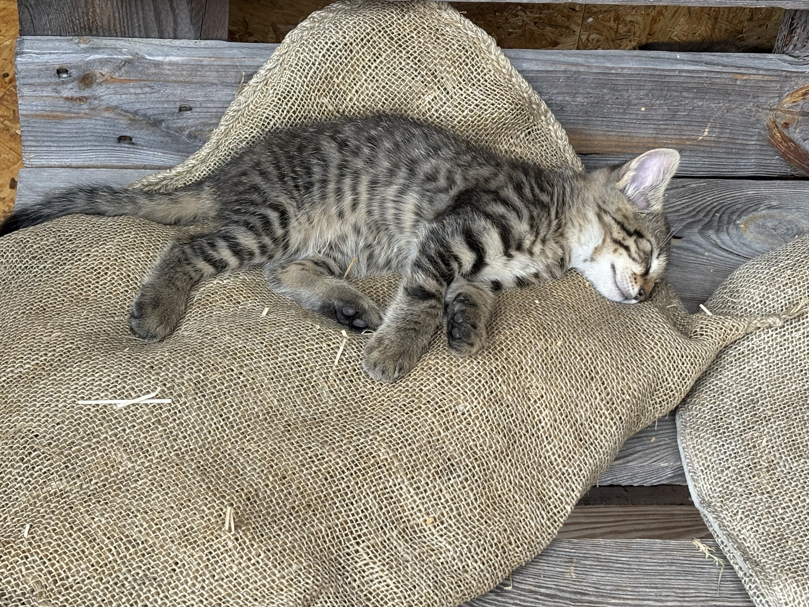

Salviamo Cani e Gatti ❤️
Salviamo Cani e Gatti ❤️

Ogni donazione aiuta animali abbandonati a ricevere cure, cibo, protezione e una nuova possibilità di vita.

Ogni donazione aiuta animali abbandonati a ricevere cure, cibo, protezione e una nuova possibilità di vita.
Aiutiamo cani e gatti in difficoltà offrendo assistenza veterinaria, cibo, cure urgenti e rifugi temporanei. Con il tuo sostegno possiamo salvare molte vite.